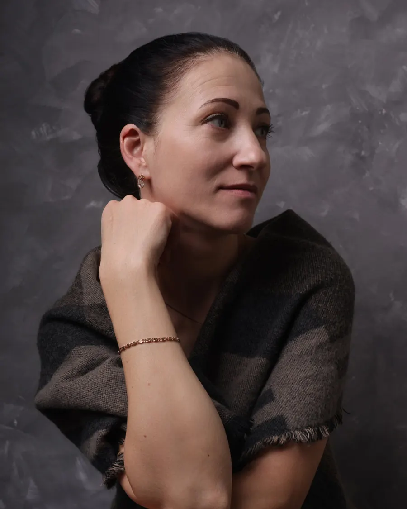

Портретна зйомка
Індивідуальні, сімейні та love story сесії в природній манері. М’яке світло, природні позування й щирі емоції.
Портрети, випускні альбоми, весілля, хрещення та дні народження. Знімаю природно, без постановки, щоб на фото залишалися живі емоції.
Обговорити зйомкуІндивідуальні, сімейні та love story сесії в природній манері. М’яке світло, природні позування й щирі емоції.
Школи та дитячі садки: груповий і індивідуальний стиль, атмосфера й деталі, що запам’ятовуються.
Від ранку нареченої до першого танцю. Репортажна подача без зупинки й теплі портрети в інтимній атмосфері.
Спокійна зйомка в церкві та вдома, без спалаху, з уважним ставленням до маленьких деталей та святкової атмосфери.
Дитячі й сімейні свята: щирі емоції, гості, сміх і моменти, які хочеться переглядати знову і знову.

Я фотографую людей так, щоб на знімках їх можна було впізнати: з їхніми жестами, поглядом, природною посмішкою й атмосферою моменту.
Працюю з природним світлом, обробляю кожен кадр вручну й готую альбоми до друку. Коротка зйомка — це не лише фото, а й задоволення від процесу, коли люди відчувають себе спокійно й природно.